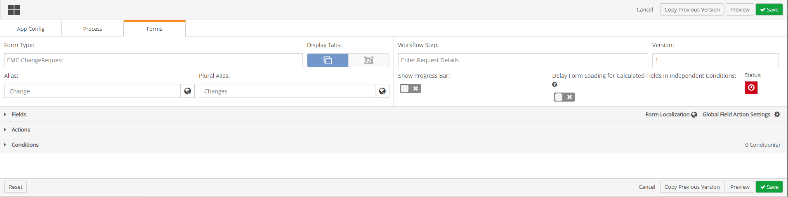
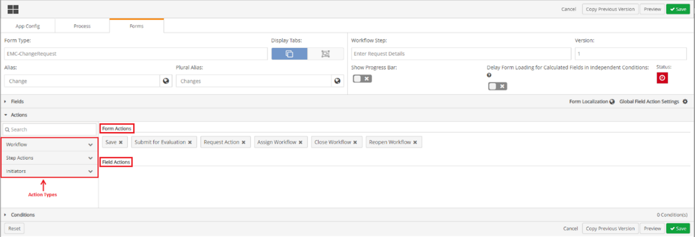
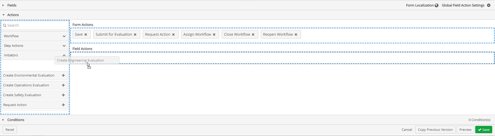
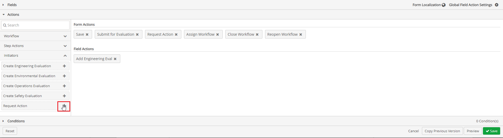
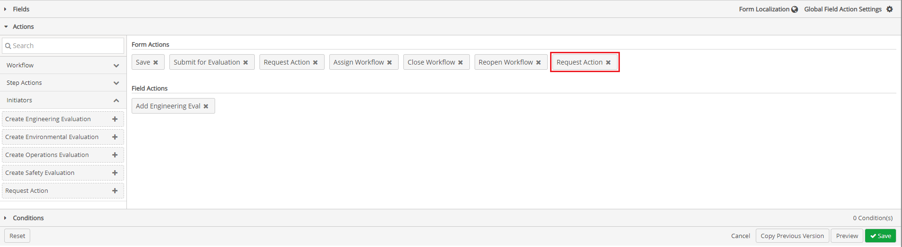
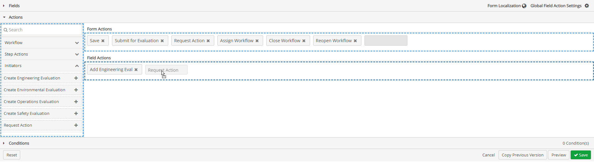

Adding field actions allows users to add possible corrective actions or findings to associated response of questions to a form.
To add Field Actions:
From the main menu dropdown, select Designer to open Forms Designer.
Click the Forms tab.
Click the Form Type dropdown textbox and select a child workflow type that will be generated as a field action associated with fields on the parent form(s).
In the Alias and Plural Alias fields, ensure terms in plain language have been substituted for the workflow type so that users can understand which instances of the workflow type is being represented. For example, replace “EII-Action” with “Action” and “Actions”.
Repeat this step for all child workflow types that will be generated as a field action on the parent forms(s).
Click the Workflow Step dropdown textbox and select a workflow step where forms are present, that require field actions.

Click the Actions ribbon. The Actions ribbon will expand with a menu of action types below it, and two sections display to the right, Form Actions, and Field Actions.
Form Actions are actions used for the whole form, for example to save a form, or to move a completed form to the next step in the workflow. Form Actions are found at the top of forms, or at the bottom right of forms.
Not all actions in the Form Actions section in designer mode display on the form for end users. For example, some actions or initiators may not be visible to the user if they are hidden by a condition or otherwise not applicable (i.e. reopen workflow only displays if the workflow is closed). Field actions allows users to configure workflow initiators to be used inline. Field actions are created and placed underneath response textboxes for questions in forms and are also used as actions to be taken based on responses to questions on the form.

Click the Initiators tab.
Drag and drop an initiator to the Field Actions section.

Clicking the + sign to the right of any action will always place the item in the Form Actions section.


Initiators from the Form Actions section can be dragged to the Field Actions section.

Items that are not initiators or are initiators that are already present in the Field Actions section cannot be dragged to the Field Actions section.